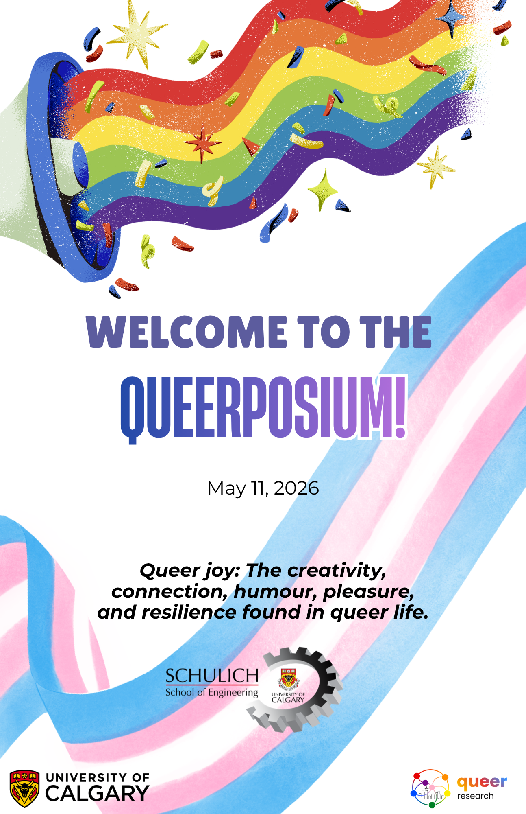

June 1, 2026, UToday
Queer Research Hub: First Queerposium unites community
Event brings together transdisciplinary researchers from many fields and faculties

June 1, 2026, UToday
Event brings together transdisciplinary researchers from many fields and faculties
April 23, 2026, Calgary Eyeopener with Loren McGinnis, Angela Knight
A pair of engineering professors at UCalgary have booted up a new initiative focused on research pertaining to queer communities. We spoke with one of the co-founders, Robyn Paul, for a closer look at the first-of-its-kind space on campus.
April 22, 2026, UToday
The Queer Research Hub's inaugural Queerposium takes place May 11
Our SSHRC-funded research examines the impact of the contemporary parental rights movement— and associated anti-2SLGBTQIA+ legislation— on youth and their families in Alberta. Using focus groups, interviews, and a province-wide survey, our research maps the negative effects of provincial legislation that bans gender affirming care for youth, excludes trans women and girls from sport, and limits inclusive education on the day-to-day lives of 2SLGBTQIA+ youth and their families, and how this legislation has led to a socio-cultural shift in the province where discrimination and hate has become normalized.
Leah Hamilton (she/her) is a Professor and Vice Dean, Research and Community Relations in the Faculty of Business, Communication Studies, and Aviation at Mount Royal University. She is a community-engaged scholar who works with newcomer communities and 2SLGBTQIA+ communities to better understand the impacts of policies and programs. Her research is funded by SSHRC.
Corinne L. Mason (they/them) is a Professor of Women’s and Gender Studies at Mount Royal University (MRU). They are the co-founder and co-director of QriTical: queer + trans research hub at MRU and the co-chair of the Women's, Gender and Social Justice Association.
Many pre-service teachers express strong commitments to inclusion but feel uncertain about how to support 2SLGBTQIA+ students in complex, shifting policy contexts. While GSAs are widely recognized as supportive spaces for youth, they are rarely used as sites of educator learning. I will discuss a current study of faculty-based GSAs as shared, care-centered learning space. Participation may support professional identity development and confidence for inclusive practice, contributing to more relational approaches to preparing educators.
Professor Tonya Callaghan (She/They) is Academic Director for LGBTQ2S+ equity, inclusion, and intersectionality in UCalgary’s Office of Institutional Commitments. A Full Professor with the Werklund School of Education, their research explores resistance to anti-homophobia and anti-transprejudice education in curriculum and policy. They specialize in critical social justice theories and anti-oppression education.
As two transgender teachers and researchers, we explore how policy, discourse, and lived experience shape teaching, belonging, and professional possibility. While united by shared identities and research interests, our experiences differ across career stages. One transitioned while teaching and witnessed over a decade of policy and cultural change; the other entered the profession already transitioned as an early-career educator. Together, we examine the systemic forces making teaching increasingly untenable for transgender educators and consider possibilities for institutional change.
Rebecca Holm is a queer and transgender educator and graduate student in Educational Research at the University of Calgary. She is a new K–12 teacher working as a substitute teacher with Calgary public. Her work is evolving toward relational approaches, informed by queer and trans theory, with a focus on accountability, connection, and transformation.
Jamie Anderson is a trans educator, parent, SSHRC scholar, and doctoral candidate at UCalgary’s Werklund School of Education. He has more than 14 years of experience teaching and consulting in the Alberta K-12 education system, and his current research examines anti-trans education policymaking in the Canadian context.
Breakout room discussion at 11:00 AM.
Contemporary threats to queer expressive freedom posed by “free speech”, hatred, and bigoted policy and content moderation expose shortcomings of the Charter freedom of expression doctrine. In this queer legal-theoretical project, I critique the doctrine’s abstract, heterocentric conceptions of individuality and expressive freedom and reorient them towards the joyful experience of expression. This project thus aims to reshape the Charter free expression rights and our socio-legal discourse to deliver social justice in the digital age.
Joe Byram (he/him) is a queer/bisexual PhD Candidate at UCalgary’s Faculty of Law. His work is driven by discipline-ambiguous curiosity about law’s entwinements with politics, society, and individuality. With his critical queer perspective, he seeks to turn legal thinking away from abstract ideals towards the joy of our complex human experience.
Lessons from the Road: Queer Advocacy and Messaging in the Fight for Trans Rights
Join Victoria Bucholtz (Executive Director of TransAction Alberta, Affiliated Faculty QriTical Hub MRU) to explore field notes from the fight for Trans Rights in Alberta and Canada. This talk will explore the challenges and successes of academic work outside the university.
A 2023 survey conducted by the GSA² found that less than half of the respondents felt UCalgary washrooms were inclusive. Inclusive washrooms are designed to be accessible and safe for people with diverse needs and identities. A 2026 analysis of floorplans and in person survey identified existing gender-inclusive washrooms and 41 gendered single-stall washrooms that could be converted to gender-inclusive through simple sign changes, many in buildings without inclusive options. The analysis also revealed accessibility gaps and is informing discussions to update UCalgary washroom design standards and policy.
The University of Calgary Graduate Student Association’s Gender and Sexuality Alliance Subcommittee (GSA²) is committed to fostering community and connections for 2SLGBTQIA+ individuals and allies through on-campus events, community fundraising efforts, and policy advocacy.
Breakout room discussion at 11:45 AM.
This research utilizes computational neuroscience to investigate how gender-affirming hormone therapy (GAHT) reshapes whole-brain functional networks in transgender populations. Working with a unique longitudinal fMRI dataset, we identify connectivity biomarkers linking GAHT-related brain reconfiguration to changes in depression and anxiety. This work aims to guide more personalized, equitable, and affirming mental health care for gender-diverse communities.
Josiah Lansang is a queer MSc student in Computer Science whose interests span computational neuroscience, equity-focused research, and queer advocacy. He is passionate about dismantling barriers facing 2SLGBTQIA+ communities.
Queers come together! This lightning talk will focus on the "Queering Home" Photovoice Study, which engaged thirty people from twelve LGBTQ+ shared households. It will outline the photovoice methodology used and highlight the everyday practices of care and creativity that Alberta-based participants bring to their shared households.
Celeste Pang (they/she) is an Assistant Professor in Women's and Gender Studies at Mount Royal University, and Co-Director of the QriTical: queer + trans research hub. Celeste's current research projects focus on 2S/LGBTQIA+ housing, equity in aging, and trans inclusion in sport.
Simulation is a valuable teaching tool which plays an important role in Child and Youth Care Counsellor (CYCC) education and fieldwork preparation. This presentation examines video scenarios and role plays used to build skills, confidence, and reduce stress, while highlighting inclusive actor recruitment, including 2SLGBTQIA+ student perspectives in simulations.
Jill Thompson (she/they) is a registered psychologist and an Assistant Professor in the Child and Youth Care (CYCC) program at Mount Royal University.
Jess (she/they) is a Bachelor of Child Studies Student in the Child and Youth Care (CYC) Program who is interested in sexuality, disability, and queer studies, and the development of self and identity throughout childhood and adolescence. As a growing scholar, Jess seeks to incorporate creativity and the experiential into their practice.
I conducted a preliminary meta-analysis of antecedents (LGBTQ+ status, outness and prior abuse) and consequences ( job performance, substance abuse, and psychological distress) of workplace sexual harassment among LGBTQ+ individuals. Among other outcomes, results confirmed significant links between LGBTQ+ status and sexual harassment, and between sexual harassment and psychological distress. I will discuss implication, and my next steps for this research.
Whitney Evans is a second-year PhD student in Organizational Behaviour/Human resources in the Haskayne School of business. Her research focuses broadly on workplace power and power dynamics, as well as sexual harassment and LGBTQ+ issues in the workplace.
Kathryn Bond Stockton, in The Queer Child, proposes the idea of "sideways growth" which can describe “delayed, deferred” queer childhoods (Stockton 4), and thus adds a new direction to the concept of "growing up". My research in ace (asexual, aromantic, and agender) studies adds another dimension and another direction. If "growing up" is like a line segment with two predetermined points and limited direction, queer studies offer a ray with a starting point but no limitation on where it might go, and ace studies offers restful inertion as a dot with infinite potential.
Shuyin Yu (she/they) recently completed a Ph.D. in English Literature at the University of Calgary. Her manuscript dissertation is an eclectic collection of essays spanning children's and young adult literature, Asian diaspora media, ace theory, food studies, and more.
Language evolves in response to social and cultural change. While English has normalized the singular they, speakers of French and Spanish are innovating with gender‑inclusive language forms such as iel, elle, and nonbinary morphemes like e and x. For nonbinary and gender‑diverse individuals, these practices support visibility, belonging, and safety. Our research documents real‑world usage and translates these practices, building on SSHRC‑funded work, into evidence‑based guidance for French and Spanish language education.
Dr. Angela George (she/her) is a Professor of Spanish and Director of the Language Research Centre at the University of Calgary. A specialist in applied linguistics and second language acquisition, her research also explores gender‑inclusive Spanish and French in educational contexts. She has taught all levels of Spanish.
Sarah’s research focus is at the intersection of identity in engineering and biology and queer theory, using queered research methods to investigate the tensions and harmonies between engineering or biology identity and queer identity, and how these identities impact belonging in their respective programs. Using qualitative research methods and including undergraduate students as researchers, her work aims to give a voice to queer engineering and biology undergraduate students and foster community within the research team.
Sarah Vestrum is a teaching professor in the Department of Electrical and Software Engineering at the University of Calgary. Sarah earned a BSc and MSc in Electrical Engineering from the University of Alberta and University of Calgary, respectively. She is now the Principal Investigator of a Taylor Institute grant examining the tensions and harmonies between engineering student identity and queer identity.
Breakout room discussion at 2:15 PM.